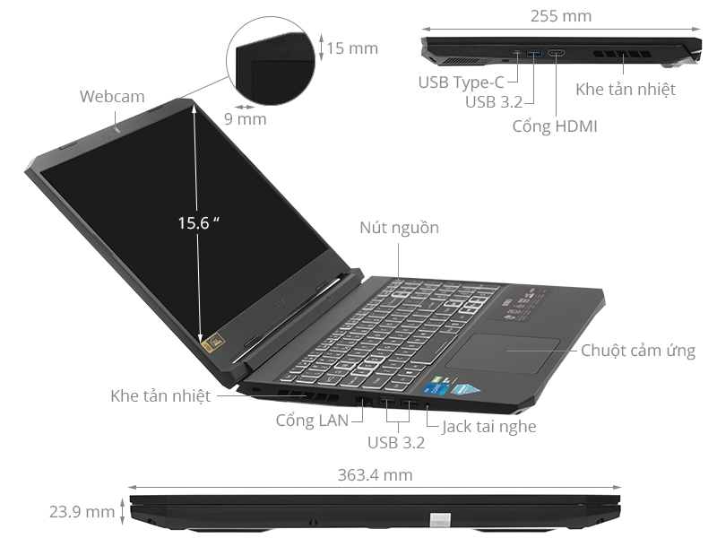

Thông tin sản phẩm
Ưu điểm:
Thiết kế đẹp mắt, tiện lợi chuyển từ Laptop sang Tablet nhanh chóng.
Màn hình hiển thị sắc nét, cảm ứng đa điểm siêu nhạy. Bút Surface chỉ có độ trễ 0.1s
Hiệu năng tổng thể có sự cải tiến vượt trội, mạnh mẽ xử lý tốt các tác vụ công việc.
Tặng kèm Surface Pen, bạn sẽ không tốn thêm ~3tr8 để mua thêm.
Tản nhiệt hoạt động hiệu quả.
Công nghệ âm thanh: High-definition audio.
Đầy đủ dung lượng ổ cứng cho người dùng tự chọn: 128GB, 512GB, 256GB,…
Nhược điểm:
Thời lượng pin của Surface Pro 4 chưa có sự vượt trội so với các đối thủ.
Giá thành vẫn chưa tốt lắm.
Bút cảm ứng
Độ nhạy của bút cảm ứng cho phiên bản Surface Pro 4 gấp 4 lần so với thế hệ trước đó của nó là Surface Pro 3. Thậm chí đây có thể coi là cây bút đem đến cảm nhận chân thực y như một cây bút thật.
Card đồ họa
Vẫn là card đồ họa tích hợp đến từ Intel nhưng ở Surface Pro 4 các card đồ hoạ sử dụng đã được nâng cấp thành Intel HD 515, Intel HD 520 và cuối cùng là Intel Iris để tương ứng với các chip xử lý lần lượt là Core M, Core i5 và Core i7.
RAM
Đánh giá Surface Pro 4 dựa trên dung lượng của RAM thì ta sẽ nhận thấy một sự thay đổi rất đáng kể. Phiên bản tùy chọn của Surface 4 có thể lên đến 16GB thay vì chỉ 8GB như Surface Pro 3.
Đây thực sự là một điểm cộng lớn đến với người dùng mong muốn sử dụng các ứng dụng có lưu lượng lớn hay xử lý đồ họa chuyên nghiệp.
Lưu lượng bộ nhớ trong
Điều đáng kinh ngạc nhất là bộ nhớ của Surface Pro 4 đã được nâng lên mức cao nhất là 1TB tức là gần gấp đôi so với Surface Pro 3 chỉ có 512GB.
Chúng tôi có nên mua Surface Pro 4 không ?”
Để thực sự khách quan khi trả lời câu hỏi có nên mua Microsoft Surface Pro 4 hay không thì chúng ta nên đánh giá Surface Pro 4 dựa trên những tiêu chí cụ thể. Thực sự nếu đánh giá chi tiết thì Surface Pro 4 sở hữu rất nhiều điểm vượt trội đáng để lựa chọn
Đánh giá cấu hình
Độ sáng màn hình của chiếc Surface Pro 4 là 382 nit. Đây là chiếc Surface có độ sáng màn hình tốt nhất từ trước đến nay và thậm chí tốt hơn tất cả những laptop có cùng phân khúc với nó.
Về khả năng hiển thị màu sắc thì Surface Pro 4 cũng ghi nhận sự nâng cấp đáng kể và thực sự ngang ngửa với tất cả các mẫu laptop dẫn đầu thị trường.
Màn hình Pixel Sense có thể hiển thị 99.7% các dải màu sRGB và độ chân thực gần như tuyệt đối (chỉ số chân thực màu sắc của chiếc Surface Pro 4 là 0.35).
Thiết kế
Là một chiếc laptop 2 trong 1 nên thiết kế của Surface Pro 4 hướng đến sự đơn giản và đa chức năng. Độ dày chỉ 8.5 milimet và trọng lượng chỉ 786 gram là quá đủ để Surface Pro 4 mỏng nhẹ như một chiếc máy tính bảng.
Tuy vậy kích thước màn hình 12,3 inch cùng chất liệu hợp kim nhôm – magie vẫn đảm bảo cho máy có độ bền cao và cấu hình cứng không khác gì một chiếc laptop thông thường.
Hệ thống bản lề được thiết kế linh hoạt sẽ vô cùng phù hợp cho những nhu cầu công việc và giải trí. Thậm chí nhờ cụm camera đã được nâng cấp và tính năng Windows Hello mà bạn có thể mở máy mà không cần đến mật khẩu.

Hiệu năng sử dụng
Thử nghiệm và đánh giá Surface Pro 4 cho thấy hiệu năng của nó không hề thua kém các mẫu laptop mỏng nhẹ đang có mặt trên thị trường. Đặc biệt nếu xem xét với khía cạnh một máy tính bảng cơ bản thì phần cấu hình của Surface Pro 4 là quá đủ để đáp ứng mọi nhu cầu giải trí của người dùng.
Nếu xét về khả năng tính toán thì Surface Pro 4 không nhanh hơn phiên bản tiền nhiệm nhiều nhưng đồ họa tích hợp thì lại vô cùng sáng giá. Năng lực xử lý của card đồ họa tích hợp sử dụng trong Surface Pro 4 đã được cải thiện rất nhiều.
Do đó máy có thể xử lý tốt dù là với hình ảnh 3D hay các video chuẩn 4K. Thậm chí máy còn hỗ trợ bạn trong nhiều tựa game đình đám như: DotA, LOL hay Starcraft 2 hoặc The Witch 3.
Bút Surface Pen tích hợp “tẩy”
Đây là trải nghiệm rất đáng giá với những người sáng tạo nghệ thuật trên nền tảng công nghệ. Không chỉ gây bất ngờ với bàn phím rời mà bút Surface Pen trên Pro 4 còn được tích hợp cục tẩy.
Điều này không chỉ đem đến sự tiện lợi, nhanh chóng cho người dùng mà còn tạo ra cảm giác chân thực không khác gì so với sử dụng bút thật.
Bàn phím rời “đáng đồng tiền bát gạo”
Chúng ta đã đánh giá Surface Pro 4 trên phương diện hiệu năng sử dụng của một máy tính bảng và thừa nhận rằng nó rất đáng thử.
Tuy nhiên điểm sáng giá nhất của sản phẩm này lại đến từ bàn phím rời của nó. Bàn phím này đem lại sự nhỏ gọn và thậm chí là khiến Microsoft Surface 4 hoàn toàn có thể thay thế cho một chiếc laptop thông thường.
Nhìn bên ngoài Type Cover có vẻ như không có gì nổi bật và xuất sắc. Đa số người mới tiếp xúc lần đầu còn cảm thấy nó rất thiếu chắc chắn.
Tuy nhiên nếu bạn trải nghiệm rồi thì sẽ thấy sản phẩm này rất đáng ngạc nhiên.
Dù bạn đã quen sử dụng các bàn phím của PC hay không hề thích bàn phím cỡ nhỏ thì bạn vẫn sẽ mê mẩn trước bàn phím rời của Surface Pro 4. Nói về tốc độ gõ thì nó chẳng thua kém gì so với Ozone Strike Pro trên máy tính của bạn ở nhà.
Dù chúng ta không thể so sánh các tiêu chí về cảm giác ngón tay hay độ nảy của bàn phím nhưng rõ ràng với một laptop 2 in 1 thì bàn phím này quả là tuyệt vời.